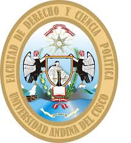
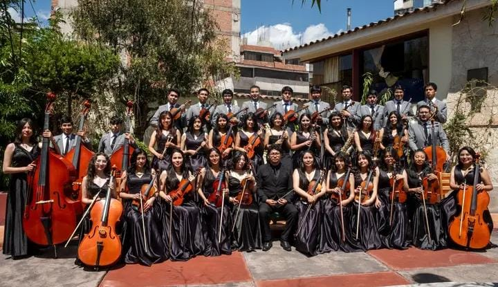
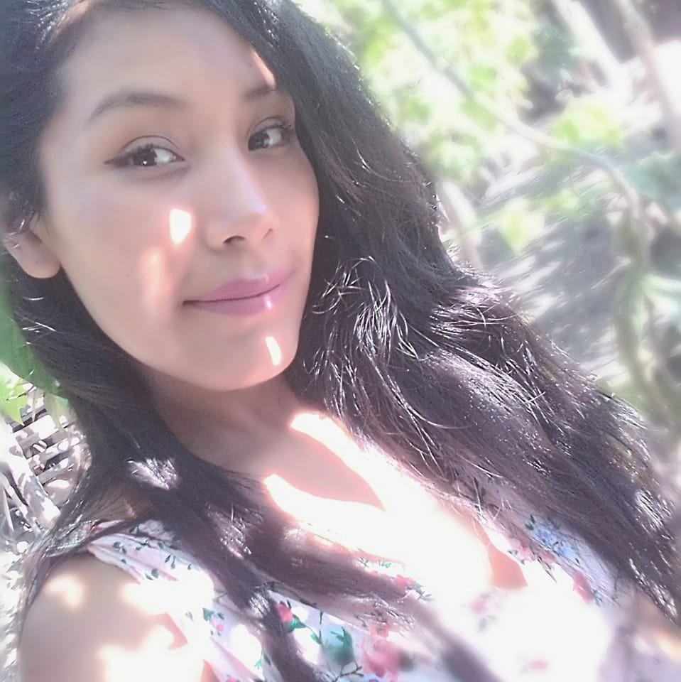
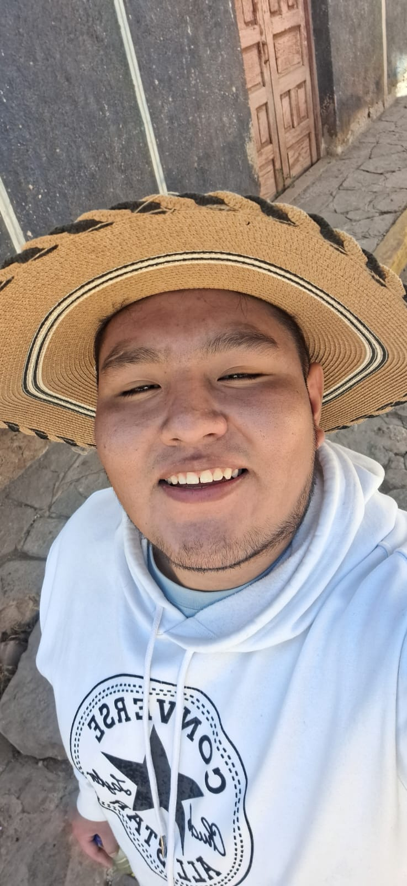
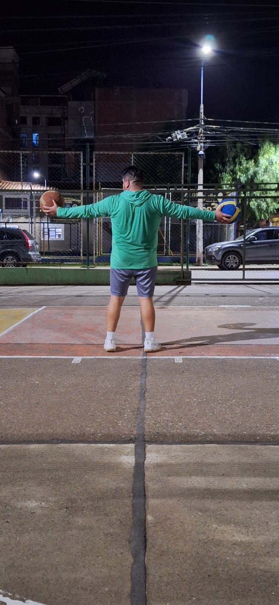
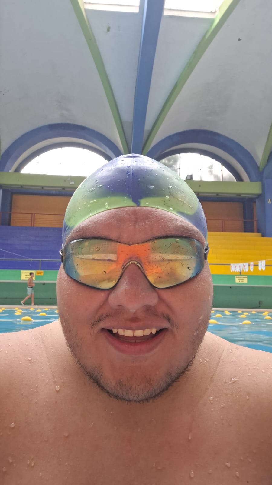
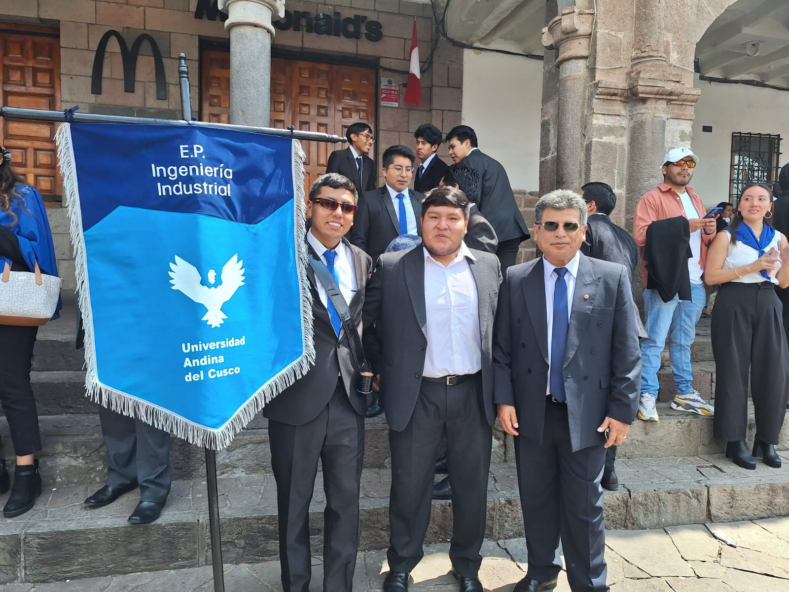
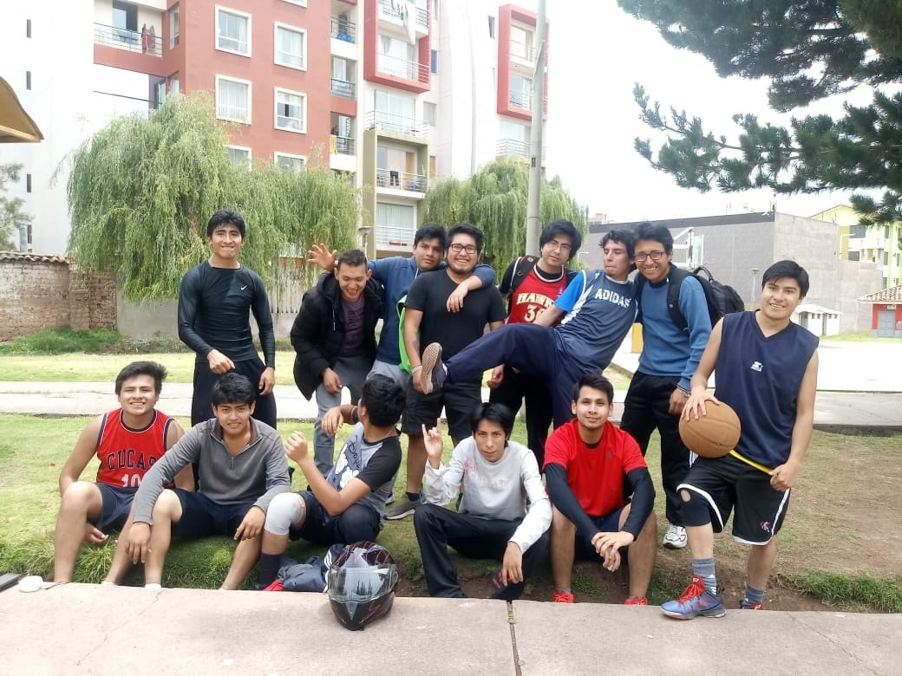

Presentación del Equipo
Somos un grupo de estudiantes del Centro de Formación en Tecnología Industrial (CENFOTI) apasionados por la computación, comprometidos con el aprendizaje de los fundamentos de la tecnología y el desarrollo de habilidades esenciales en el área. A continuación, presentamos a los miembros de nuestro equipo:
Cusihuaman Valdez, Mayerlin Kiara
Carrera: Estudie Derecho en la universidad Andina del Cusco
Hobbies: Me gusta tocar el violin, videojuegos, los rompecabezas y lectura de ciencia ficción
Detalle adicional: Soy amante de los animales, soy parte de varios grupos animalistas
Jallo Chaiña, Katherine
Carrera: Contabilidad
Hobbies: Me gusta cabalgar, bailar, viajar

Detalle adicional:
Ccahua Nayhua, Cesar Alejandro
Carrera: Ingenieria Industrial
Hobbies: Me gusta jugar basket, practicar natación y jugar fútbol
  Detalle adicional: Poder seleccionar la viabilidad del trabajo
Lozada Eduardo Brayan
Carrera: Soy egresado de la carrera de administración de negocios internacionales
Hobbies: Me gusta jugar basket, tocar la guitarra y jugar videojuegos
Detalle adicional: Además, me gustan mucho los animales